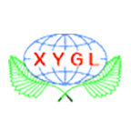

<!doctype html>
<html>
<head>
    <meta charset="utf-8">
    <meta http-equiv="X-UA-Compatible" content="IE=edge">
    <meta name="viewport" content="initial-scale=1.0, user-scalable=no, width=device-width">
    <title>烟台市新宇过滤设备有限公司</title>
    <link rel="stylesheet" href="https://cache.amap.com/lbs/static/main1119.css"/>
    <style type="text/css">
        .info {
            border: solid 1px silver;
        }
        div.info-top {
            position: relative;
            background: none repeat scroll 0 0 #F9F9F9;
            border-bottom: 1px solid #CCC;
            border-radius: 5px 5px 0 0;
        }
        div.info-top div {
            display: inline-block;
            color: #333333;
            font-size: 14px;
            font-weight: bold;
            line-height: 31px;
            padding: 0 10px;
        }
        div.info-top img {
            position: absolute;
            top: 10px;
            right: 10px;
            transition-duration: 0.25s;
        }
        div.info-top img:hover {
            box-shadow: 0px 0px 5px #000;
        }
        div.info-middle {
            font-size: 12px;
            padding: 6px;
            line-height: 20px;
        }
        div.info-bottom {
            height: 0px;
            width: 100%;
            clear: both;
            text-align: center;
        }
        div.info-bottom img {
            position: relative;
            z-index: 104;
        }
        span {
            margin-left: 5px;
            font-size: 11px;
        }
        .info-middle img {
            float: left;
            margin-right: 6px;
        }
    </style>
    <script type="text/javascript"
            src="https://webapi.amap.com/maps?v=1.4.6&key=52f1f3102f7d8484c0f779aec6d1a105"></script>
   
</head>
<body>
<div id="container"></div>
<script type="text/javascript">
	//地图初始化时，在地图上添加一个marker标记,鼠标点击marker可弹出自定义的信息窗体
    var map = new AMap.Map("container", {
        resizeEnable: true,
        center: [121.327607,37.528588],
        zoom: 12
    });    
    addMarker();
    //添加marker标记
    function addMarker() {
        map.clearMap();
        var marker = new AMap.Marker({
            map: map,
            position: [121.327607,37.528588]
        });
        //鼠标点击marker弹出自定义的信息窗体
        AMap.event.addListener(marker, 'click', function() {
            infoWindow.open(map, marker.getPosition());
        });
    }

    //实例化信息窗体
    var title = '烟台市新宇过滤设备有限公司',
        content = [];
    content.push("地址：烟台市芝罘区只楚镇港城西大街38号");
    content.push("电话：0535-6513570 13954528071");
    content.push("联系人：张经理");
    var infoWindow = new AMap.InfoWindow({
        isCustom: true,  //使用自定义窗体
        content: createInfoWindow(title, content.join("<br/>")),
        offset: new AMap.Pixel(16, -45)
    });

    //构建自定义信息窗体
    function createInfoWindow(title, content) {
        var info = document.createElement("div");
        info.className = "info";

        //可以通过下面的方式修改自定义窗体的宽高
        //info.style.width = "400px";
        // 定义顶部标题
        var top = document.createElement("div");
        var titleD = document.createElement("div");
        var closeX = document.createElement("img");
        top.className = "info-top";
        titleD.innerHTML = title;
        closeX.src = "http://webapi.amap.com/images/close2.gif";
        closeX.onclick = closeInfoWindow;

        top.appendChild(titleD);
        top.appendChild(closeX);
        info.appendChild(top);

        // 定义中部内容
        var middle = document.createElement("div");
        middle.className = "info-middle";
        middle.style.backgroundColor = 'white';
        middle.innerHTML = content;
        info.appendChild(middle);

        // 定义底部内容
        var bottom = document.createElement("div");
        bottom.className = "info-bottom";
        bottom.style.position = 'relative';
        bottom.style.top = '0px';
        bottom.style.margin = '0 auto';
        var sharp = document.createElement("img");
        sharp.src = "http://webapi.amap.com/images/sharp.png";
        bottom.appendChild(sharp);
        info.appendChild(bottom);
        return info;
    }

    //关闭信息窗体
    function closeInfoWindow() {
        map.clearInfoWindow();
    }
</script>
<script type="text/javascript" src="https://webapi.amap.com/demos/js/liteToolbar.js"></script>
</body>
</html>
